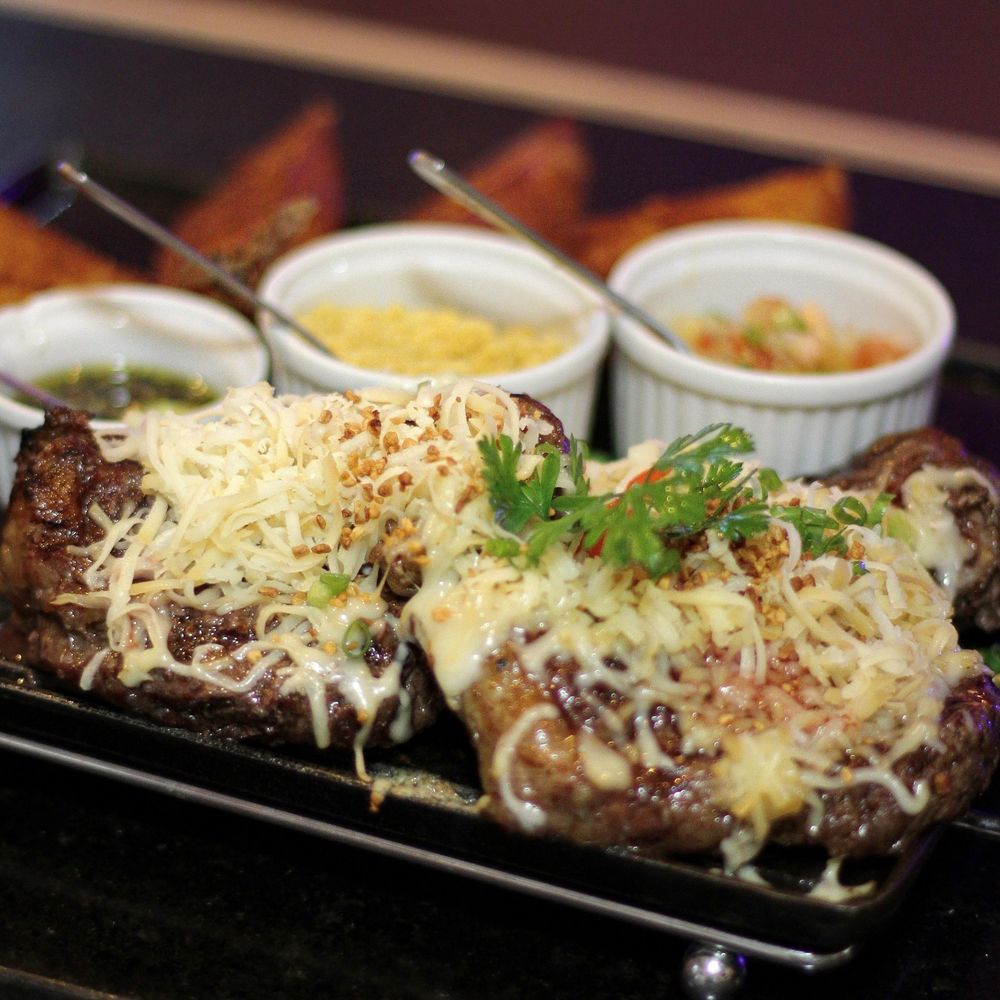
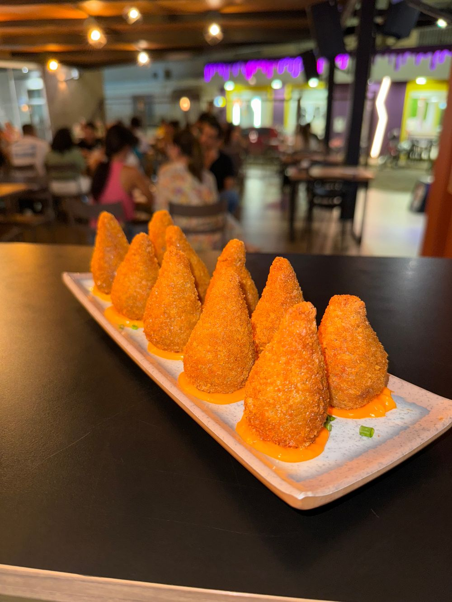
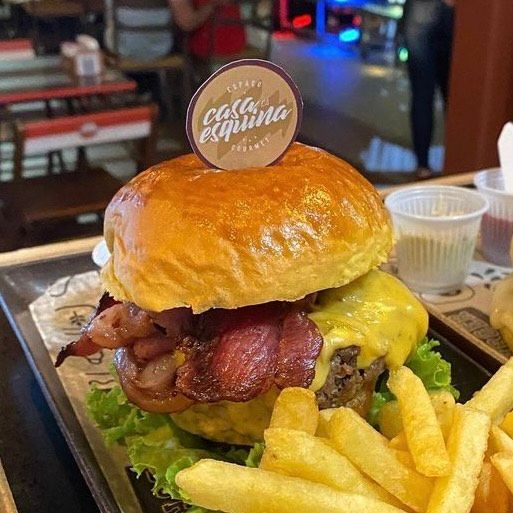
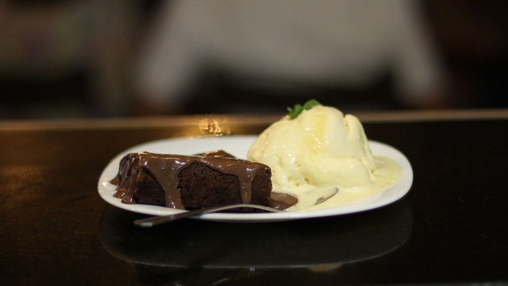
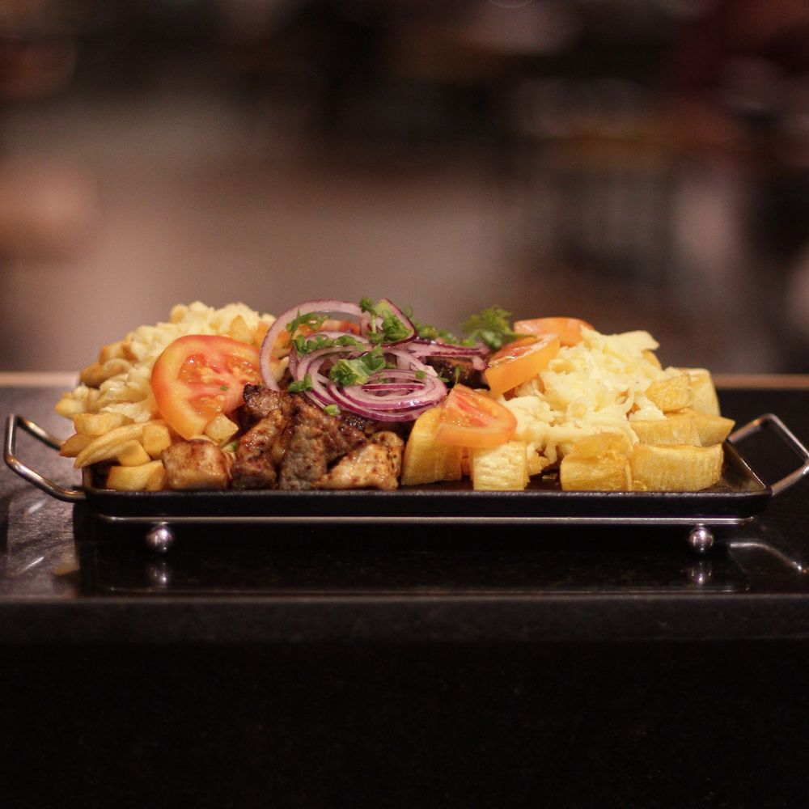

Grelhados
Maminha ao provolone
R$ 88,00Batata rústica, chimichurri, vinagrete e farofa.
O calor de uma boa mesa. A personalidade de uma esquina. Uma identidade que abre o apetite e convida a ficar.

Tomate e mostarda com energia de mesa cheia.
Fotografia generosa, sem excesso de elementos.
Um caminho claro para finalizar no iFood.
Carvão para o clima da noite. Vermelho tomate e mostarda para a energia da casa. Creme ilumina os textos e a comida ganha destaque. Clique em uma cor para copiar.
60% fundos escuros / 20% tomate / 10% mostarda / 10% creme e apoio. Atmosfera noturna com pontos de cor intensos.
Creme sobre carvão, tomate ou verde. Carvão sobre mostarda e laranja. Textos secundários em bege claro sobre os fundos escuros.
Carvão cria o ambiente noturno. Tomate conduz ao pedido e mostarda destaca os convites. Laranja e verde entram em detalhes, com as fotos sempre em evidência.
Veneer nos títulos curtos e nas categorias: presença, textura e espírito de encontro. Barlow no corpo: leitura confortável e espaço para a comida aparecer.
Veneer definida para os títulos. A prévia usa Barlow até o arquivo da Veneer ser adicionado.
Petiscos para compartilhar, grelhados e hambúrgueres. Explore o cardápio da casa e escolha o que combina com a sua vontade.
Luz lateral quente, textura nítida e sombras com detalhe. A fotografia ocupa o primeiro plano; nome, descrição e preço completam o convite.
Batata rústica, chimichurri, vinagrete e farofa.

Sem massa, com creme de cheddar. 10 unidades.

Brioche, hambúrguer de 140 g, mussarela e bacon.

Chocolate e sorvete de creme para fechar a noite.
Preços de referência do levantamento PedyUN em 30/09/2026; confirmar antes da publicação. Fotos originais do cardápio.

Uma luz quente de lado revela o dourado da comida. O fundo escuro recua, sem apagar os ingredientes nem transformar as cores do prato.
Uma pausa para sentir a casa: luz quente, comida na mesa e encontros. O ambiente também faz parte do convite.
Petiscos para dividir, grelhados e uma mesa para reunir a turma. O próximo encontro pode ser aqui.
Encontre a casaFotografar na altura de quem está à mesa, com pessoas ao fundo e luzes quentes. Se houver vídeo, usar uma tomada curta e natural do salão, com reprodução opcional.
Botões claros, poucas escolhas por vez e uma chamada principal para o pedido. O vermelho tomate conduz ao pedido; a mostarda destaca os convites sobre fundos intensos.
Primário: pedido. Secundário: descoberta. O pedido e o pagamento serão concluídos no iFood.
Uma das opções de grelhados da casa.
Endereço visível, horário fácil de encontrar e um mapa integrado. A localização faz parte do convite para conhecer o restaurante.
Rua Rui Barbosa, 107
Centro, Janaúba — Minas Gerais
Horário conforme a bio do Instagram, sujeito à confirmação para publicação. O mapa usa busca pelo endereço; conferir o ponto exato antes do lançamento.
Movimento lento, formas arredondadas e luz quente. Uma assinatura 3D que acrescenta personalidade ao convite de abertura.
Um selo com o monograma da marca, em acabamento de cerâmica amarelo mostarda, pode flutuar discretamente ao lado do título. Este estudo mostra o ritmo; o modelo GLB será criado ou escolhido na etapa do site.